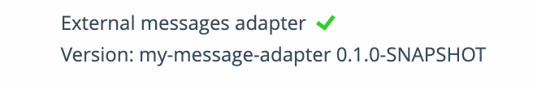

External Message Adapter Implementation Guide
The project
A minimal maven project structure for an external message adapter module is shown below:
my-message-adapter
|-- src
| |-- main
| | |-- java
| | | |-- my.project
| | | | |-- MyExternalMessageFacadeEjb.java
| | |-- resources
| | | |-- version.txt
| |-- test
| | |-- java
| | | |-- my.project
| | | | |-- MyMessageAdapterTest.java
| | |-- resources
|-- pom.xml
MyMessageAdapter.java
This is the main class of the external message adapter module.
It must implement the ExternalMessageAdapterFacade interface from the sormas-api module.
For more information please refer to the javadoc on the ExternalMessageAdapterFacade interface.
Example:
package my.project;
import de.symeda.sormas.api.externalmessage.ExternalMessageAdapterFacade;
import de.symeda.sormas.api.externalmessage.ExternalMessageDto;
import de.symeda.sormas.api.externalmessage.ExternalMessageResult;
import javax.ejb.Stateless;
import java.io.BufferedReader;
import java.io.InputStreamReader;
import java.nio.charset.StandardCharsets;
import java.util.Collections;
import java.util.Date;
import java.util.List;
import java.util.Objects;
import java.util.stream.Collectors;
@Stateless(name = "MyExternalMessageFacade")
public class MyExternalMessageFacadeEjb implements ExternalMessageAdapterFacade {
@Override
public ExternalMessageResult<List<ExternalMessageDto>> getExternalMessages(Date since) {
return new ExternalMessageResult<>(Collections.emptyList(), new Date(), true, null);
}
@Override
public ExternalMessageResult<String> convertToHTML(ExternalMessageDto message) {
return new ExternalMessageResult<>("", new Date(), true, null);
}
@Override
public ExternalMessageResult<byte[]> convertToPDF(ExternalMessageDto message) {
return new ExternalMessageResult<>(new byte[0], new Date(), true, null);
}
@Override
public String getVersion() {
return new BufferedReader(
new InputStreamReader(
Objects.requireNonNull(MyExternalMessageFacadeEjb.class.getResourceAsStream("/version.txt")),
StandardCharsets.UTF_8)).lines().collect(Collectors.joining("\n"));
}
}
version.txt
This file contains the template string that describes this modules version. It is used by the SORMAS server to display the version of configured external message module's version on the about page. SORMAS also uses the version method for doing an availability check.
You can use the maven resource filtering to replace placeholders in the version.txt file with values from the pom.xml file.
Example:
${project.name} ${project.version}
pom.xml
This is the maven project configuration file.
The sormas-api must be added as a dependency to your project in order to be able to implement the ExternalMessageAdapterFacade interface.
Example with default dependencies for java-ee, sormas-api, logging and testing:
Expand to see below the whole file content
<project xmlns="http://maven.apache.org/POM/4.0.0" xmlns:xsi="http://www.w3.org/2001/XMLSchema-instance" xsi:schemaLocation="http://maven.apache.org/POM/4.0.0 http://maven.apache.org/xsd/maven-4.0.0.xsd">
<modelVersion>4.0.0</modelVersion>
<properties>
<sormas.version>1.85.0</sormas.version>
<warName>my-message-adapter</warName>
<javaee.version>8.0</javaee.version>
<slf4j.version>1.7.30</slf4j.version>
<junit.version>4.13.1</junit.version>
</properties>
<groupId>my.project</groupId>
<artifactId>my-message-adapter</artifactId>
<name>${project.artifactId}</name>
<packaging>war</packaging>
<version>0.1.0-SNAPSHOT</version>
<dependencies>
<dependency>
<groupId>javax</groupId>
<artifactId>javaee-web-api</artifactId>
<version>${javaee.version}</version>
</dependency>
<dependency>
<groupId>${project.groupId}</groupId>
<artifactId>sormas-api</artifactId>
<version>${sormas.version}</version>
</dependency>
<dependency>
<groupId>org.slf4j</groupId>
<artifactId>slf4j-api</artifactId>
<version>${slf4j.version}</version>
</dependency>
<dependency>
<groupId>junit</groupId>
<artifactId>junit</artifactId>
<version>${junit.version}</version>
<scope>test</scope>
</dependency>
...
</dependencies>
<build>
<finalName>${project.artifactId}</finalName>
...
</build>
</project>
<project xmlns="http://maven.apache.org/POM/4.0.0" xmlns:xsi="http://www.w3.org/2001/XMLSchema-instance" xsi:schemaLocation="http://maven.apache.org/POM/4.0.0 http://maven.apache.org/xsd/maven-4.0.0.xsd">
<modelVersion>4.0.0</modelVersion>
<properties>
<sormas.version>1.85.0</sormas.version>
<warName>my-message-adapter</warName>
<javaee.version>8.0</javaee.version>
<slf4j.version>1.7.30</slf4j.version>
<junit.version>4.13.1</junit.version>
</properties>
<groupId>my.project</groupId>
<artifactId>my-message-adapter</artifactId>
<name>${project.artifactId}</name>
<packaging>war</packaging>
<version>0.1.0-SNAPSHOT</version>
<dependencies>
<dependency>
<groupId>javax</groupId>
<artifactId>javaee-web-api</artifactId>
<version>${javaee.version}</version>
</dependency>
<dependency>
<groupId>${project.groupId}</groupId>
<artifactId>sormas-api</artifactId>
<version>${sormas.version}</version>
</dependency>
<dependency>
<groupId>org.slf4j</groupId>
<artifactId>slf4j-api</artifactId>
<version>${slf4j.version}</version>
</dependency>
<dependency>
<groupId>junit</groupId>
<artifactId>junit</artifactId>
<version>${junit.version}</version>
<scope>test</scope>
</dependency>
...
</dependencies>
<build>
<finalName>${project.artifactId}</finalName>
...
</build>
</project>
<project xmlns="http://maven.apache.org/POM/4.0.0" xmlns:xsi="http://www.w3.org/2001/XMLSchema-instance"
xsi:schemaLocation="http://maven.apache.org/POM/4.0.0 http://maven.apache.org/xsd/maven-4.0.0.xsd">
<modelVersion>4.0.0</modelVersion>
<properties>
<sormas.version>1.85.0</sormas.version>
<warName>my-message-adapter</warName>
<junit.version>4.13.1</junit.version>
<mockito.version>3.6.0</mockito.version>
<assertj.version>3.18.1</assertj.version>
<commons-lang.version>3.11</commons-lang.version>
<commons-io.version>2.8.0</commons-io.version>
<slf4j.version>1.7.30</slf4j.version>
<javaee.version>8.0.1</javaee.version>
<maven.compiler.source>11</maven.compiler.source>
<maven.compiler.target>11</maven.compiler.target>
<productionBranch>master</productionBranch>
</properties>
<groupId>my.project</groupId>
<artifactId>my-message-adapter</artifactId>
<name>${project.artifactId}</name>
<packaging>war</packaging>
<version>0.1.0-SNAPSHOT</version>
<repositories>
<repository>
<id>central</id>
<name>bintray</name>
<url>https://jcenter.bintray.com</url>
<snapshots>
<enabled>false</enabled>
</snapshots>
</repository>
</repositories>
<dependencies>
<dependency>
<groupId>javax</groupId>
<artifactId>javaee-web-api</artifactId>
<version>${javaee.version}</version>
</dependency>
<dependency>
<groupId>org.slf4j</groupId>
<artifactId>slf4j-api</artifactId>
<version>${slf4j.version}</version>
</dependency>
<dependency>
<groupId>${project.groupId}</groupId>
<artifactId>sormas-api</artifactId>
<version>${sormas.version}</version>
</dependency>
<dependency>
<groupId>junit</groupId>
<artifactId>junit</artifactId>
<version>${junit.version}</version>
<scope>test</scope>
</dependency>
<dependency>
<groupId>org.mockito</groupId>
<artifactId>mockito-core</artifactId>
<version>${mockito.version}</version>
<scope>test</scope>
</dependency>
<dependency>
<groupId>org.mockito</groupId>
<artifactId>mockito-inline</artifactId>
<version>${mockito.version}</version>
<scope>test</scope>
</dependency>
<dependency>
<groupId>org.assertj</groupId>
<artifactId>assertj-core</artifactId>
<version>${assertj.version}</version>
<scope>test</scope>
</dependency>
<dependency>
<groupId>org.jsoup</groupId>
<artifactId>jsoup</artifactId>
<version>1.14.2</version>
<scope>compile</scope>
</dependency>
<dependency>
<groupId>org.hamcrest</groupId>
<artifactId>hamcrest-library</artifactId>
<version>1.3</version>
<scope>test</scope>
</dependency>
<dependency>
<groupId>org.apache.maven</groupId>
<artifactId>maven-model</artifactId>
<version>3.8.4</version>
<scope>test</scope>
</dependency>
</dependencies>
<build>
<finalName>${project.artifactId}</finalName>
<!-- Provide version.txt that can be read for returning the desired version string of this module -->
<resources>
<resource>
<directory>src/main/resources</directory>
<filtering>true</filtering>
<includes>
<include>**/version.txt</include>
</includes>
</resource>
<resource>
<directory>src/main/resources</directory>
<filtering>false</filtering>
<excludes>
<exclude>**/version.txt</exclude>
</excludes>
</resource>
</resources>
<plugins>
<plugin>
<groupId>org.apache.maven.plugins</groupId>
<artifactId>maven-war-plugin</artifactId>
<version>3.2.3</version>
<configuration>
<warName>${warName}</warName>
<filteringDeploymentDescriptors>true</filteringDeploymentDescriptors>
<webResources>
<resource>
<directory>src/main/webapp</directory>
<targetPath>/</targetPath>
<filtering>false</filtering>
</resource>
</webResources>
</configuration>
</plugin>
<plugin>
<groupId>com.amashchenko.maven.plugin</groupId>
<artifactId>gitflow-maven-plugin</artifactId>
<version>1.15.1</version>
<configuration>
<gitFlowConfig>
<productionBranch>${productionBranch}</productionBranch>
<developmentBranch>development</developmentBranch>
<featureBranchPrefix>feature-</featureBranchPrefix>
<releaseBranchPrefix>release-</releaseBranchPrefix>
<hotfixBranchPrefix>hotfix-</hotfixBranchPrefix>
<versionTagPrefix>v</versionTagPrefix>
</gitFlowConfig>
<commitMessagePrefix>[GITFLOW]</commitMessagePrefix>
<useSnapshotInHotfix>true</useSnapshotInHotfix>
</configuration>
</plugin>
<!-- Code Coverage / activate Integration Tests -->
<plugin>
<artifactId>maven-failsafe-plugin</artifactId>
<version>2.19.1</version>
<executions>
<execution>
<id>integration-test</id>
<phase>integration-test</phase>
<goals>
<goal>integration-test</goal>
</goals>
</execution>
<execution>
<id>verify</id>
<phase>verify</phase>
<goals>
<goal>verify</goal>
</goals>
</execution>
</executions>
</plugin>
<plugin>
<groupId>org.jacoco</groupId>
<artifactId>jacoco-maven-plugin</artifactId>
<version>0.8.5</version>
<inherited>true</inherited>
<executions>
<execution>
<id>prepare-coverage</id>
<phase>generate-test-sources</phase>
<goals>
<goal>prepare-agent</goal>
</goals>
</execution>
<execution>
<id>analyze-coverage</id>
<phase>verify</phase>
<goals>
<goal>report</goal>
</goals>
</execution>
<execution>
<id>prepare-coverage-integration</id>
<phase>pre-integration-test</phase>
<goals>
<goal>prepare-agent-integration</goal>
</goals>
</execution>
<execution>
<id>analyze-coverage-integration</id>
<phase>post-integration-test</phase>
<goals>
<goal>report-integration</goal>
</goals>
</execution>
</executions>
</plugin>
</plugins>
</build>
</project>
Deploying into the sormas domain
Set the interface.demis.jndiName in the sormas.properties of your SORMAS domain.
This JNDI name should match the location the external message ejb implemented in the module.
Following the above example project it would be:
interface.demis.jndiName=java:global/my-message-adapter/MyExternalMessageFacade
After changing the sormas.properties, restart the SORMAS domain then deploy your module.
Deploying in your local development environment
- in your IDE, import the module to your SORMAS-Project
- make the module deploy on your glassfish server (add it just next to sormas-rest, sormas-ui and sormas-ear war files)
After that, you should be able to build and deploy SORMAS with your module. If you want to exclude your module from the build, that can be done in IntelliJ as follows: File -> Settings -> Build, Execution, Deployment -> Compiler -> Excludes
Deploying in your payara domain
- build the project with maven
- deploy the built
.warfile in thesormasdomain of your payara server
Testing the deployment
In the SORMAS web interface, go to the About menu, and you must see a green checkmark next to the External message adapter label and your module's version text provided by implementing the ExternalMessageAdapterFacade::getVersion method.
e.g.: 